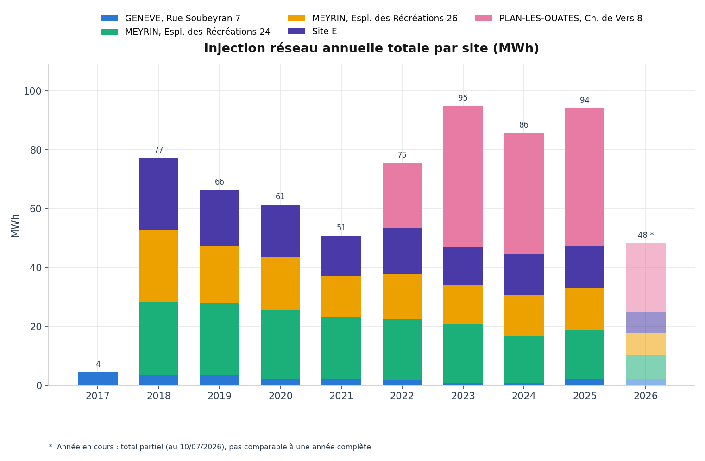
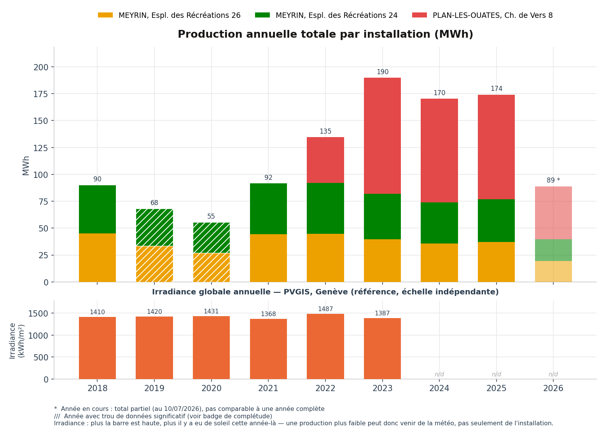
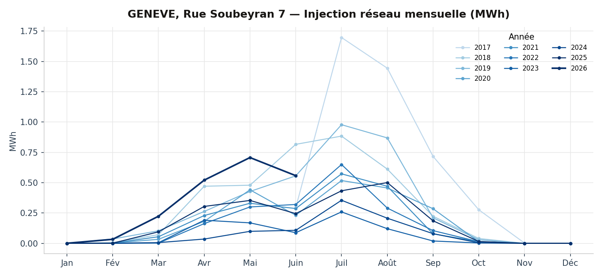
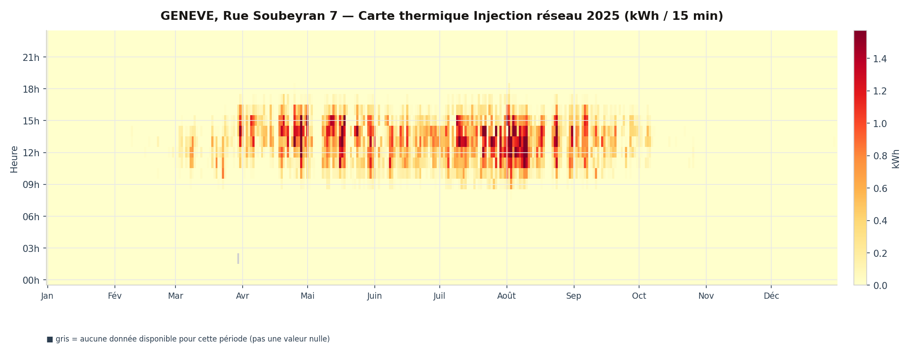

01
Genève, Rue Soubeyran 7
Rue Soubeyran 7, 1202 Genève, Suisse
- Surface
- 180 m²
- Puissance
- 29,9 kWc
- Production
- 30 000 kWh/an
- Service depuis
- 2016
Autoconsommation93 %
Nos installations photovoltaïques
Enerko finance et exploite des installations photovoltaïques en autoconsommation collective à Genève. Choisissez une fiche pour le détail complet — description technique, financement, communauté d'autoconsommateurs et données mesurées.
01
Rue Soubeyran 7, 1202 Genève, Suisse
02
Esplanade des Récréations 24 et 26, 1217 Meyrin, Suisse
03
Chemin de Vers 8, 1228 Plan-les-Ouates, Suisse
Totaux annuels par site, en MWh. Basculez entre injection réseau et production.


Choisissez d'abord le type de données, puis le site — seuls ceux disposant de ce type de mesure sont proposés. « Injection réseau » est le surplus d'électricité PV injecté dans le réseau (refoulement) ; « Production » est la production PV brute de l'installation.


